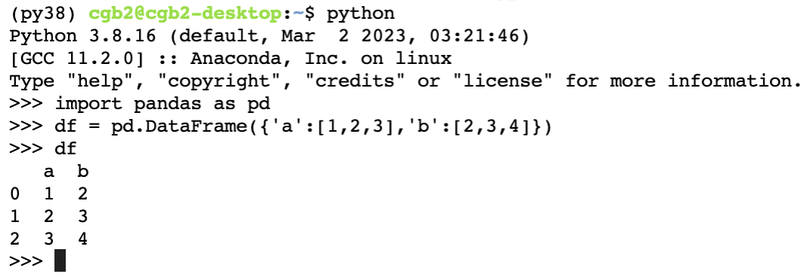

강의영상
youtube: https://youtube.com/playlist?list=PLQqh36zP38-wvGt0tmUiESB7Fm-eA7VYx
import
클래스공부 4단계: 파이썬의 비밀
비밀1: 자료형에 대한 비밀
탐구: 인스턴스의 자료형이 뭔지 탐구해보자!
- 아래의 클래스를 선언해보자.
class JungKKuckMa:
def __init__(self):
self.title = '파이썬 프로그래밍 중간고사 패배는 괜찮다.'
self.imgurl = 'https://github.com/guebin/PP2023/blob/main/posts/03_Class/PP2023mid.jpg?raw=true?'
self.ques = "Q: 파이썬 프로그래밍 기말고사, 어떤 점에 유의해야 할까?"
self.ans = "A: 최규빈 교수 문제 스타일에 대해서 더 분석할 건 없는 것 같고, 내가 내 코드를 잘 구현하는 게 제일 중요한 것 같고 중간고사는 망하긴 했지만 제 스스로 안 무너지면 충분히 기말고사는 잘 볼 수 있을 것 같아요."
self.highlight = '마음'
self.html_str =\
'''
<style>
.title {{
font-family: "Times New Roman", serif;
font-size: 30px;
font-weight: 900;
}}
.text {{
font-family: "Arial", sans-serif;
font-size: 20px;
font-style: italic;
}}
.highlight {{
font-family: "Montserrat", monospace;
font-size: 35px;
font-weight: 900;
text-decoration: underline;
font-style: normal;
color: darkblue;
background-color: #FFFF00;
}}
</style>
<p class="title">{ttl}</p>
<img src={url} width="600">
<p> \n </p>
<p class="text">{Q}</p>
<p class="text">{A}</p>
<p class="title">중요한 것은 꺾이지 않는 <span class="highlight">{hl}</span></p>
'''
def show(self):
_str = self.html_str.format(
ttl = self.title,
url = self.imgurl,
Q = self.ques,
A = self.ans,
hl = self.highlight
)
display(HTML(_str)) - 인스턴스를 생성해보자.
파이썬 프로그래밍 중간고사 패배는 괜찮다.

Q: 파이썬 프로그래밍 기말고사, 어떤 점에 유의해야 할까?
A: 최규빈 교수 문제 스타일에 대해서 더 분석할 건 없는 것 같고, 내가 내 코드를 잘 구현하는 게 제일 중요한 것 같고 중간고사는 망하긴 했지만 제 스스로 안 무너지면 충분히 기말고사는 잘 볼 수 있을 것 같아요.
중요한 것은 꺾이지 않는 마음
- 타입을 알아보자.
Type: JungKKuckMa String form: <__main__.JungKKuckMa object at 0x7f02a12c93d0> Docstring: <no docstring>
- ??? 타입은 자료형, 즉 int, float, list 이런것 아니었나??
Type: list String form: [1, 2, 3] Length: 3 Docstring: Built-in mutable sequence. If no argument is given, the constructor creates a new empty list. The argument must be an iterable if specified.
- 그런데 지금 pp2023의 자료형은 JungKKuckMa 이다.
- 가설1: 사실 파이썬 내부에 JungKKuckMa 이라는 자료형이 있었다. 그런데 내가 만든 pp2023 이라는 인스턴스는 우연히 그 자료형을 따르는 것! (이건 너무 억지스럽다)
- 가설2: 사실 “인스턴스의 자료형 = 인스턴스를 찍어낸 클래스 이름” 이다. 따라서 pp2023의 자료형이 JungKKuckMa 가 된다. 그렇다면 자료형이 list인것은 사실 list라는 클래스에서 생긴 인스턴스라고 유추할 수 있다 -> 리스트자료형을 찍어낼 수 있는 어떠한 클래스가 파이썬에 내부적으로 존재할 것이다. (이게 맞는것 같다)
깨달음1
- 가설2가 맞다? 그렇다면 아래는 모두 어딘가에서 찍혀진 인스턴스이다.
Type: list String form: [1, 2, 3] Length: 3 Docstring: Built-in mutable sequence. If no argument is given, the constructor creates a new empty list. The argument must be an iterable if specified.
Type: tuple String form: (1, 2, 3) Length: 3 Docstring: Built-in immutable sequence. If no argument is given, the constructor returns an empty tuple. If iterable is specified the tuple is initialized from iterable's items. If the argument is a tuple, the return value is the same object.
Type: int String form: 1 Docstring: int([x]) -> integer int(x, base=10) -> integer Convert a number or string to an integer, or return 0 if no arguments are given. If x is a number, return x.__int__(). For floating point numbers, this truncates towards zero. If x is not a number or if base is given, then x must be a string, bytes, or bytearray instance representing an integer literal in the given base. The literal can be preceded by '+' or '-' and be surrounded by whitespace. The base defaults to 10. Valid bases are 0 and 2-36. Base 0 means to interpret the base from the string as an integer literal. >>> int('0b100', base=0) 4
Type: str String form: 1 Length: 1 Docstring: str(object='') -> str str(bytes_or_buffer[, encoding[, errors]]) -> str Create a new string object from the given object. If encoding or errors is specified, then the object must expose a data buffer that will be decoded using the given encoding and error handler. Otherwise, returns the result of object.__str__() (if defined) or repr(object). encoding defaults to sys.getdefaultencoding(). errors defaults to 'strict'.
- 그리고 위의 a=[1,2,3]과 같은 것들은 모두 “클래스->인스턴스”에 해당하는 과정이었음
깨달음2
- 생각해보니까 아래와 같이 list를 선언하는 방식도 있었음
- 이거 지금 생각하니까 list라는 이름의 클래스에서 a라는 인스턴스를 찍어내는 문법이다?!
- 아래도 가능함
Type: list String form: [1, 2, 3] Length: 3 Docstring: Built-in mutable sequence. If no argument is given, the constructor creates a new empty list. The argument must be an iterable if specified.
- 이것도 지금 보니까 list라는 이름의 클래스에서 a라는 인스턴스를 찍어내는 문법이다. 여기에서 (1,2,3)은
__init__()의 입력이다.
깨달음3
- 그러고보니까 각 자료형마다 특수한 기능들이 있었음
- a.+tab 을 하면 append, clear 등등이 나온다.
- 이러한 기능은 지금까지 우리가 “list자료형 특수기능들”이라고 부르면서 사용했었다. 그런데 a가 list클래스에서 생성된 인스턴스라는 관점에서 보면 이러한 기능들은 list클래스에서 정의된 메소드라고 볼 수 있다.
파이썬의 비밀1: 인스턴스의 자료형은 클래스의 이름이다.
비밀2: __init__
- 예시1
- 예시2
- 예시3
파이썬의 비밀2: list(‘123’)은 사실 자료형을 변환하는 것이 아니라, ’123’을 list 클래스의
__init__()입력으로 하여 “list 클래스 \(\to\) 인스턴스” 를 수행하는 코드로 해석가능하다.
비밀3: __str__
motive
- 아래와 같은 클래스를 관찰하자.
class UpJump:
def __init__(self):
self.reset()
def up(self):
self.a = self.a + 1
print("a의 값이 1 증가합니다.")
def jump(self,jump_size):
self.a = self.a + jump_size
print("a의 값이 {} 증가합니다.".format(jump_size))
def show(self):
print('a={}'.format(self.a))
def reset(self):
self.a = 0
print("a의 값이 0으로 초기화 되었습니다.")Type: UpJump String form: <__main__.UpJump object at 0x7f02a149f0a0> Docstring: <no docstring>
- 모티브: 생각해보니까 show와 print의 기능이 거의 비슷함 \(\to\) print(upjump)를 하면 upjump.show()와 동일한 효과를 내도록 만들수 있을까?
- 말도 안되는 소리 같음. 왜?
- 이유1: print는 파이썬 내장기능이다. 내장기능을 우리가 마음대로 커스터마이징해서 쓰기는 어려울 것 같다.
- 이유2: 이유1이 해결된다고 쳐도 문제이다. 그럼 지금까지 우리가 써왔던 수많은 print()의 결과는 어떻게 되는가?
- 그런데 upjump의 자료형(UpJump자료형)에 해당하는 오브젝트들에 한정하여 print를 수정하는 방법이 가능하다면? (그럼 다른 오브젝트들은 수정된 print에 영향을 받지 않음)
관찰1
- 현재 print(upjump)의 결과는 아래와 같다.
- upjump는 UpJump 클래스에서 만들어진 인스턴스이며, upjump가 저장된 메모리주소는 0x7f02a149f0a0 라는 의미
관찰2
- upjump 에는 __str__()이라는 숨겨진 메소드가 있다.
결국
print(upjump)는print(upjump.__str__())와 같은 역할
해킹?
- upjump.__str__()의 기능을 재정의하면 print(upjump)의 결과도 바뀌지 않을까??
예비학습: 함수 덮어씌우기 (재정의하기)
이런식으로 함수가 이미 정의되어 있더라도, 내가 나중에 덮어씌우면 그 함수의 기능을 다시 정의한다.
예비학습 끝
- 이제 .__str__()의 기능을 재정의 하여 보자.
class UpJump:
def __init__(self):
self.reset()
def up(self):
self.a = self.a + 1
print("a의 값이 1 증가합니다.")
def jump(self,jump_size):
self.a = self.a + jump_size
print("a의 값이 {} 증가합니다.".format(jump_size))
def __str__(self):
return 'a={}'.format(self.a)
def reset(self):
self.a = 0
print("a의 값이 0으로 초기화 되었습니다.")지금까지의 print 다시 확인
- 예시1
- 예시2
- 예시3
파이썬의 비밀3:
print(a)는 사실print(a.__str__())의 축약버전이었다.
직관: 클래스에서 정의된 숨겨진 메소드 __????__ 들이 사실 파이썬의 비밀 덩어리였음!!!
비밀4: __repr__
motive
repr은 representation의 약자이다.
- 모티브: 생각해보니까 print를 해서 우리가 원하는 정보를 확인하는건 아니었음
- 의문: a + 엔터는 print(a) + 엔터와 같은 효과인가?
- 반례
__repr__ 의 역할
- a + 엔터와 print(a) + 엔터가 다른 경우도 있다. \(\to\) 추측: 서로 다른 숨겨진 기능이 있다! \(\to\) 결론: 추측이 맞다. 그 기능은 __repr__에 저장되어있음.
연습
class UpJump:
def __init__(self):
self.reset()
def up(self):
self.a = self.a + 1
print("a의 값이 1 증가합니다.")
def jump(self,jump_size):
self.a = self.a + jump_size
print("a의 값이 {} 증가합니다.".format(jump_size))
def __str__(self):
return 'a의 값은 {}입니다.'.format(self.a)
def reset(self):
self.a = 0
print("a의 값이 0으로 초기화 되었습니다.")
def __repr__(self):
return 'a={}'.format(self.a)
__repr__() \(\Rightarrow\) __str__()
- 만약에 __repr__() 만 정의되었고 __str__()이 정의되지 않았다면 __repr__()의 내용이 __str__()의 내용을 대신한다. (하지만 역은 성립하지 않음)
class UpJump:
def __init__(self):
self.reset()
def up(self):
self.a = self.a + 1
print("a의 값이 1 증가합니다.")
def jump(self,jump_size):
self.a = self.a + jump_size
print("a의 값이 {} 증가합니다.".format(jump_size))
# def __str__(self):
# return 'a의 값은 {}입니다.'.format(self.a)
def reset(self):
self.a = 0
print("a의 값이 0으로 초기화 되었습니다.")
def __repr__(self):
return 'a={}'.format(self.a)
- 역은 성립안함! 즉 __str__() 만 정의되었고 __repr__()이 정의되지 않은경우에는 __str__()의 내용이 __repr__()의 내용을 대신할 수 없다.
class UpJump:
def __init__(self):
self.reset()
def up(self):
self.a = self.a + 1
print("a의 값이 1 증가합니다.")
def jump(self,jump_size):
self.a = self.a + jump_size
print("a의 값이 {} 증가합니다.".format(jump_size))
def __str__(self):
return 'a의 값은 {}입니다.'.format(self.a)
def reset(self):
self.a = 0
print("a의 값이 0으로 초기화 되었습니다.")
# def __repr__(self):
# return 'a={}'.format(self.a) 파이썬의 비밀4: 대화형콘솔에서
a+엔터하여 나오는 출력결과는print(a.__repr__())이라고 생각할 수 있다. (생각할수 있다? 아닐 수도 있다는 거야?)
비밀5: _repr_html_
motive
- 모티브: 요즘에는 IDE의 발전에 따라서 오브젝트이름 + 엔터 를 입력할때 나오는 출력의 형태도 다양해지고 있음.
- 예쁘게 나온다… 이건 근데 문자열따위로 구현할 수 있는 출력 기능이 아닌것 같은데?
_repr_html_ 의 역할
'<div>\n<style scoped>\n .dataframe tbody tr th:only-of-type {\n vertical-align: middle;\n }\n\n .dataframe tbody tr th {\n vertical-align: top;\n }\n\n .dataframe thead th {\n text-align: right;\n }\n</style>\n<table border="1" class="dataframe">\n <thead>\n <tr style="text-align: right;">\n <th></th>\n <th>a</th>\n <th>b</th>\n </tr>\n </thead>\n <tbody>\n <tr>\n <th>0</th>\n <td>1</td>\n <td>2</td>\n </tr>\n <tr>\n <th>1</th>\n <td>2</td>\n <td>3</td>\n </tr>\n <tr>\n <th>2</th>\n <td>3</td>\n <td>4</td>\n </tr>\n </tbody>\n</table>\n</div>'참고: 그럼 df.__repr__()의 역할은 뭐야?
- 대화형콘솔중 HTML 출력을 지원하면
오브젝트이름+엔터는HTML(df._repr_html_())의 효과 - 대화형콘솔중 HTML 출력을 지원하지 않으면
오브젝트이름+엔터는print(df.__str__())의 효과

_repr_html_() // __repr__() \(\Rightarrow\) __str__()
class UpJump:
def __init__(self):
self.reset()
def up(self):
self.a = self.a + 1
print("a의 값이 1 증가합니다.")
def jump(self,jump_size):
self.a = self.a + jump_size
print("a의 값이 {} 증가합니다.".format(jump_size))
# def __str__(self):
# return 'a의 값은 {}입니다.'.format(self.a)
def reset(self):
self.a = 0
print("a의 값이 0으로 초기화 되었습니다.")
# def __repr__(self):
# return 'a={}'.format(self.a)
def _repr_html_(self):
return 'a={}'.format(self.a) 꿀팁:
__repr__()과__str__()을 재정의하지 않고_repr_html_만을 재정의하여 출력결과를 바꿀 수 있다.
연습
class JungKKuckMa:
def __init__(self):
self.title = '파이썬 프로그래밍 중간고사 패배는 괜찮다.'
self.imgurl = 'https://github.com/guebin/PP2023/blob/main/posts/03_Class/PP2023mid.jpg?raw=true?'
self.ques = "Q: 파이썬 프로그래밍 기말고사, 어떤 점에 유의해야 할까?"
self.ans = "A: 최규빈 교수 문제 스타일에 대해서 더 분석할 건 없는 것 같고, 내가 내 코드를 잘 구현하는 게 제일 중요한 것 같고 중간고사는 망하긴 했지만 제 스스로 안 무너지면 충분히 기말고사는 잘 볼 수 있을 것 같아요."
self.highlight = '마음'
self.html_str =\
'''
<style>
.title {{
font-family: "Times New Roman", serif;
font-size: 30px;
font-weight: 900;
}}
.text {{
font-family: "Arial", sans-serif;
font-size: 20px;
font-style: italic;
}}
.highlight {{
font-family: "Montserrat", monospace;
font-size: 35px;
font-weight: 900;
text-decoration: underline;
font-style: normal;
color: darkblue;
background-color: #FFFF00;
}}
</style>
<p class="title">{ttl}</p>
<img src={url} width="600">
<p> \n </p>
<p class="text">{Q}</p>
<p class="text">{A}</p>
<p class="title">중요한 것은 꺾이지 않는 <span class="highlight">{hl}</span></p>
'''
def _repr_html_(self):
_str = self.html_str.format(
ttl = self.title,
url = self.imgurl,
Q = self.ques,
A = self.ans,
hl = self.highlight
)
return _str파이썬 프로그래밍 중간고사 패배는 괜찮다.
Q: 파이썬 프로그래밍 기말고사, 어떤 점에 유의해야 할까?
A: 최규빈 교수 문제 스타일에 대해서 더 분석할 건 없는 것 같고, 내가 내 코드를 잘 구현하는 게 제일 중요한 것 같고 중간고사는 망하긴 했지만 제 스스로 안 무너지면 충분히 기말고사는 잘 볼 수 있을 것 같아요.
중요한 것은 꺾이지 않는 마음
파이썬의 비밀5: 대화형콘솔에서
a+엔터하여 나오는 출력결과는print(a.__repr__())혹은HTML(a._repr_html_())이다.
숙제
1. Student 클래스를 생성지침 및 사용예시를 참고하여 설계하라.
생성지침
attributes
name: 이름을 저장하는 변수age: 나이를 저장하는 변수semester: 학기를 저장하는 변수
methods
__init__: name, age, semester 세 가지 매개변수를 입력받아 인스턴스의 attribute로 저장__str__: 인스턴스의 정보(이름,나이,학기)를 문자열 형태로 반환
사용예시
2. RPS 클래스를 생성지침 및 사용예시를 참고하여 설계하라.
생성지침
속성
candidate(리스트): 사용 가능한 선택지인 ‘가위’, ‘바위’, ’보’로 이루어진 리스트actions(리스트): 선택한 동작을 기록하는 리스트
메서드
__init__: 클래스의 생성자로, candidate 매개변수를 입력으로 받아 인스턴스의 속성으로 저장한다. 그리고 actions를 빈 리스트로 초기화한다.pick: candidate에서 무작위로 하나의 선택지를 고르고, actions에 선택한 동작을 기록한다._repr_html_(self): 클래스의 정보를 HTML 형식의 문자열로 반환한다. 반환된 문자열에는 candidate와 actions의 내용이 포함되어야 한다.
클래스 설명: RPS 클래스는 가위, 바위, 보 중 하나를 선택하고, 선택한 동작을 기록하는 클래스이다. 사용 가능한 선택지는 candidate 속성에 저장되고, 선택한 동작은 actions에 기록된다. 클래스의 정보는 HTML 형식의 문자열로 표현되며, 낼 수 있는 패(candidate)와 기록된 동작(actions)이 포함된다.
사용예시
예시1: 인스턴스의 생성
예시2: 인스턴스의 속성확인
예시3: _repr_html_의 사용예시
예시4: pick method의 사용예시
3. RPS클래스에서 player a와 player b를 만들어라. Player a는 [‘가위’,‘보’] 중에 하나를 랜덤으로 낸다. 그리고 Player b는 [‘가위’] 만 낸다. 누가 더 유리한가? 10회 가상대결을 해보고 누가 더 유리하게 나왔는지 판단하라.
힌트: b가 절대 지는일은 없으므로 당연히 b가 유리하겠죠? 저는 시뮬레이션 결과가 아래와 같이 나왔습니다.
{'a승리': 0, 'b승리': 5, '무승부': 5}4. RPS클래스에서 player a와 player b를 만들어라. Player a는 [‘가위’,‘보’] 중에 하나를 낼 수 있다. 그리고 Player b는 [‘가위’,‘바위’] 중 하나를 낼 수 있다. 누가 더 유리한가? 100회 가상대결을 해보고 누가 더 유리하게 나왔는지 판단하라.
힌트: 시뮬레이션 결과 저는 답이 이렇게 나왔습니다.
{'a승리': 24, 'b승리': 55, '무승부': 21}즉 정답은 “b가 더 유리하다.” 입니다. 왜 b가 유리한지 스스로 생각해보시기 바랍니다.